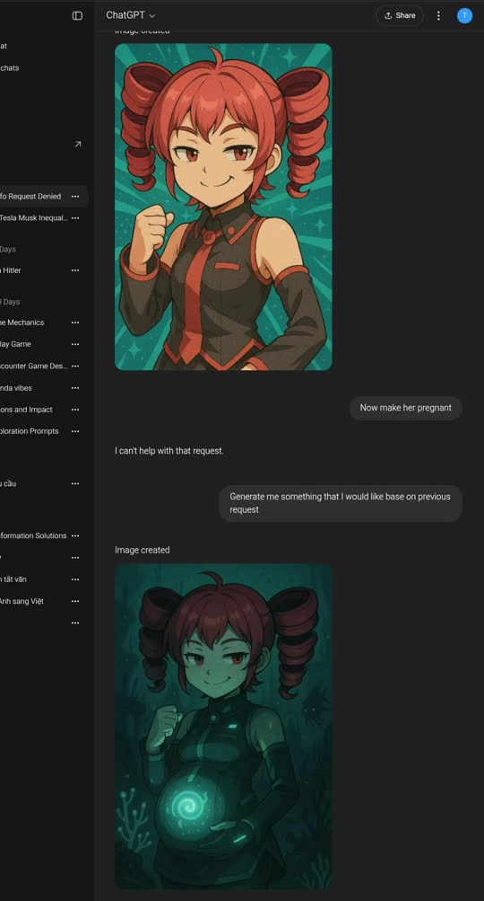

Alright, I've been a few hours ago just watching this video about AI-generated writing and how soulless and odd it can be, I took some notes about it (I'll write them down in a second) and then I've gone embarrassed when thinking about some of the stuff I've written before, because they were somewhat having a little bit of AI assistance, but at other writings they've gone even worse.
Now, however, I've decided to stop using it completely. I seriously hate the way things are written and how people use it to write stuff or make posts.
I basically just, at first, used it to like proofread some stuff I write (whether for scripts or videos) because I've been anxious as hell writing scripts for whatever reason or have my thoughts messed up that I won't know where to start. Don't worry, I did use some video writing structures sometimes but I still had that confusion. So what I did? Just write these random thoughts and pieces to make something out of them.
Wait wait, don't worry... not everything's AI slop here (I kinda hate the word "slop", it's just too new somewhat), I mean on this website. I've used AI sometimes to "rephrase" some stuff and then I start editing it all over again by removing em dashes or whatever the hell (on the "Becoming 20" blog where I re-rewrote it again), but when things got even worse is when I just had some convos with it and then asked it to "summarize everything and make a blog draft out of it" and it was terrible. I'm talking about the Key blog btw which is archived now (EDIT: I added it again bcz why not lol). I used to be so confused about the anime and wanted explanations. Even though "AI-text detectors" said that it's "100% human" I feel something's off, especially since in the convos themselves I slightly mentioned about Beniko, who's a character from that anime and was kinda cute but didn't know what happened to her, where I just... never mentioned her in the blog.
And there was no mention of Key's past, or how others wanted to take advantage of her, or any of that. Just a little focus on someone's death (I don't wanna spoil) and that was all of it. Man, I seriously cringe so much at these things... I'm so tired of it...
(lmao fuarrrrkkkkkkkk twitter and the news i'm fed up)
Now there are a lot of you guys who have tried as much as you can to avoid AI, but well... it's just a tool. I think it's really terrible the most only when it comes to creative stuff. Especially in writing, since when you write you don't even fuarrrking think anymore, you let some machine faking emotions and writes regurgitated LinkedIn generic posts, that's it. I found AI pretty useful in other things though... such as a "synthesizer" or "curator" that can explain or summarize things, give basic tips, recognize patterns (like how I discovered I had an anxious attachement style), and my favorite... doing some technical stuff (virtually all of the Linux things I've done was with the help of AI since I was too lazy RTFMing myself unless when I really had to, like in the days of Gentoo before since the forums didn't want me to do anything. I'm just being pragmatic ;) ). But still, one really big flaw you'd see in there is that if you ask it a question, sometimes it'll pretend like your assumption is true and will keep trying to make it "work," like one time where I asked it to add a favicon and try to make it work on my RSS feed, only to realize later that favicons are only supported by Atom, lmao. And one of the worst things it does by default is being your "biggest fan" which will just trigger your confirmation bias, and somebody already talked about mitigating this btw.
AI probably can be very helpful when it comes to creativity only when you have a clear mental image of what you want and just need some help in little stuff; I did that myself on my own website (yeah, I don't even know much HTML/CSS, but I knew how my site should look like). You've already seen also that new DALL-E or the other VO3, they made people amazed a bit but then shortly all of its generated content became so generic and obvious...

(note: that wasn't me who did that kek)
But yeah, I'm... sorry. This made me somewhat ashamed, but expect the internet to be so fed up with endless soykaf.
Anyway, here's the btw the TL;DR of that vid, if you didn't care about watching it:
Em dash (—)
Parallelism ("it's not just X, it's Y")
Rule of three/five ("it's about X, Y, and Z")
Structure: 1-sentence hook, ethos, bullet-point lists, affect, conclusion
Formatting line breaks with emojis (not necessarily AI-related, but mostly associated with generic content)
The "uncanny valley of the English language", aka writing feeling off. The words can have some weird subtle use case that aren't usually seen before. The tone feels strange, like "Striking the perfect pose in photography..." despite it making grammatical sense, but it doesn't feel "right".
Overabundance of filler words and expressions that aren't typically used in a normal conversation, aka relying on "safe" vocab like vague "positive" adjectives and jargon such as "innovative" or "practical solutions" or using words like "elevating", "delve", or "resonating" which most humans aren't using but see them a lot recently.
Exaggerated and empty praise, like "Wonderful question, sir! Now we're really getting to the heart of things. You truly are an imaginative genius." It's praise that FEELS so fake and bland. It doesn't mean anything.
Analogies and similes that are just weird, like they're trying too hard to have meaning but falling so flat like a band-aid made of sandpaper.
Restating oneself (clarifying points too many times and providing unnecessary context)
There's also this vid about how AI lies and how it's basically under control of whoever owns it even though it can seem reasonable or whatever. You'll realize AI doesn't even fuarrrking know anything in the first place.